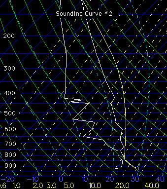

Data has been collected
for three different balloon soundings to give you an opportunity to test
your understanding of what atmospheric conditions are most likely to produce
thunderstorms. The curves displayed on the balloon sounding reflect vertical
changes of temperature and dew point. They represent different conditions
observed in the atmosphere which may be associated with the possibility
of thunderstorm development. As you look at the following soundings
think about the questions posed along with each sounding and use your best
judgment to select the answer you think is most appropriate. Automatic
feedback is provided to help you gain insight into how the atmosphere works.
The sounding curve shows temperature as the white line
farthest to the right while dewpoint is the white line farther to the left.&nbs
The air parcel follows the yellow line up through the atmosphere.
To help you understand these processes pick the response that you think
is most appropriate.
Sounding Curve #2

The sounding curve shows temperature as the white line
farthest to the right while dewpoint is the white line farther to the left.
The air parcel follows the yellow line up through the atmosphere.
To help you understand these processes pick the response that you think
is most appropriate.
Great Job!!! An expert would say that
the balloon sounding portrays an atmosphere that is neither stable nor
unstable. Thunderstorms are rather unlikely in this situation. A neutral
atmosphere is present when the temperature of a lifted parcel (bubble of
air) is the same as the surrounding air temperature. The temperature profile
of the atmosphere from the balloon sounding and that for the air parcel
(bubble of air) are seen to be so similar that the lines are nearly identical
at any level (the air parcel path is represented by the yellow line while
the actual air temperature is represented by the white line farthest to
the right on the sounding). Therefore the densities are also nearly the
same. These conditions will cause the lifted parcel to remain where it
is put.
Neutral Weather Condition
The correct response (C) is that the
temperature of the parcel is nearly equal to the temperature of the environment
at the same level. Since it has nearly the same density it is neutrally
buoyant. This means it will remain where it is put which results in neither
upward nor downward motion. An expert would say that the balloon
sounding portrays an atmosphere that is neither stable nor unstable. Thunderstorms
are rather unlikely in this situation. A neutral atmosphere is present
when the temperature of a lifted parcel (bubble of air) is the same as
the surrounding air temperature. The temperature profile of the atmosphere
from the balloon sounding and that for the air parcel (bubble of air) are
seen to be so similar that the lines are nearly identical at any level
(the air parcel path is represented by the yellow line while the actual
air temperature is represented by the white line farthest to the right
on the sounding). Therefore the densities are also nearly the same. These
conditions will cause the lifted parcel to remain where it is put.
Unstable Weather Conditions
Great Job!!! An expert would say
that the balloon sounding corresponds to an atmosphere that is unstable.
Thunderstorms are very likely in this situation. An unstable atmosphere
is present when the temperature of a lifted parcel (bubble of air) is greater
than the surrounding air temperature. This can be seen by comparing
the balloon sounding (the actual temperature profile) with the path of
the bubble or parcel (calculated). The air parcel path is represented
by the yellow line while the actual air temperature is represented by the
white line farthest to the right on the sounding. For this sounding
the parcel temperature is warmer than the actual air temperature at any
level, therefore its density is less than the surrounding air. These
conditions will result in rising bubbles of air in the atmosphere. Upward
motions are responsible for cloud formation.
Loading time: 1 minute
for a 28.8 modem.
Unstable Weather Conditions
The correct response
(B) is that the parcel is warmer than the temperature of the environment
at the same level. It is then less dense than the surrounding atmosphere,
and like a cork held under water and released, will rise. It is less
dense than the surrounding atmosphere and is buoyant which results in upward
movement. An expert would say that the balloon sounding corresponds
to an atmosphere that is unstable. Thunderstorms are very likely
in this situation. A unstable atmosphere is present when the temperature
of a lifted parcel (bubble of air) is greater than the surrounding air
temperature. This can be seen by comparing the balloon sounding (the
actual temperature profile) with the path for the bubble or air parcel
(calculated). The air parcel path is represented by the yellow line while
the actual air temperature is represented by the white line farthest to
the right on the sounding. For this sounding the parcel temperature
is warmer than the actual air temperature at any level, therefore its density
is less than the surrounding air. These conditions will result in
rising bubbles of air in the atmosphere. Upward motions are responsible
for cloud formation.
Loading Time: 1 minute
for 28.8 modem.
Stable Weather Conditions
Great Job!!! An expert would say that the balloon sounding portrays
an atmosphere that is stable. Thunderstorms are very unlikely in this situation.
A stable atmosphere is present when the temperature of a lifted parcel
(bubble of air) is less than the surrounding air temperature (the balloon
sounding). The air parcel path, represented by the yellow line, is based
on calculations while the actual air temperature is represented by the
white line farthest to the right on the sounding. A comparison of the actual
environment and the bubble temperature shows the parcel temperature to
be colder than the air temperature at any level, therefore the parcel density
is greater than the surrounding air. These conditions will cause the displaced
parcel to return to its original level rather than continuing upward. Because
upward motions are essential for the formation of clouds with vertical
extent, stable conditions throughout the atmosphere are not conducive to
thunderstorm development.
Stable Weather Conditions
The correct response (A) is that the parcel is colder compared to that
of the temperature of the environment at the same level. It is then
denser than the surrounding atmosphere, and like a rock in water, will
sink. An expert would say that the balloon sounding portrays an atmosphere
that is stable. Thunderstorms are very unlikely in this situation. A stable
atmosphere is present when the temperature of a lifted parcel (bubble of
air) is less than the surrounding air temperature (the balloon sounding).
The air parcel path, represented by the yellow line, is based on calculations
while the actual air temperature is represented by the white line farthest
to the right on the sounding. A comparison of the actual environment and
the bubble temperature shows the parcel temperature to be colder than the
air temperature at any level, therefore the parcel density is greater than
the surrounding air. These conditions will cause the displaced parcel to
return to its original level rather than continuing upward. Because upward
motions are essential for the formation of clouds with vertical extent,
stable conditions throughout the atmosphere are not conducive to thunderstorm
development.